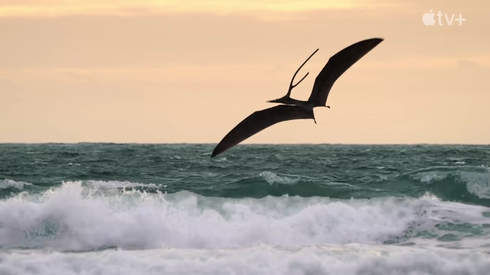

Computational Simulation of Pterosaur Flight: Investigating Wing Morphology and Aerodynamic Performance

Abstract
This project aims to investigate the flight mechanics of pterosaurs by utilizing computational simulations that integrate physics-based modeling and computer graphics techniques. The study focuses on understanding the influence of wing morphology on the aerodynamic performance of pterosaurs during powered flight. By combining principles of fluid dynamics, biomechanics, and computer graphics, this research will shed light on the biomechanical adaptations and flight capabilities of these ancient flying reptiles.Objectives
- Develop a physics-based computational model that accurately simulates the flight dynamics of pterosaurs, incorporating realistic wing morphologies based on fossil records and comparative anatomy.
- Investigate the effects of various wing shapes, such as elongated versus broad wings, on the aerodynamic performance of pterosaurs, including lift generation, drag reduction, and maneuverability.
- Analyze the relationship between wing loading, aspect ratio, and flight efficiency in different pterosaur species, considering their varying sizes and ecological niches.
- Explore the role of wing flexibility and control surfaces in the maneuverability and stability of pterosaurs during flight, examining the interaction between wing kinematics and aerodynamic forces.
- Visualize and analyze the simulated flight data using computer graphics techniques, creating visually compelling representations of pterosaur flight and providing insights into their aerial behaviors.
Methodology
- Gather and analyze available data on pterosaur wing morphology, including fossil records, comparative studies, and biomechanical data from extant flying species.
- Develop a physics-based computational model integrating fluid dynamics principles and biomechanical equations to simulate pterosaur flight.
- Implement computer graphics techniques to visualize the simulated flight data, producing realistic and informative renderings of pterosaur flight mechanics.
- Perform computational simulations using varying wing shapes, sizes, and flight conditions to assess the effects of different morphological parameters on flight performance.
- Analyze the simulation results to quantify aerodynamic forces, determine optimal wing designs for efficient flight, and identify trade-offs between different flight parameters.